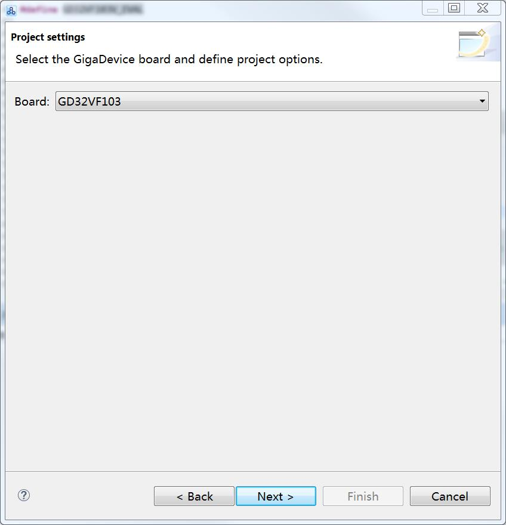
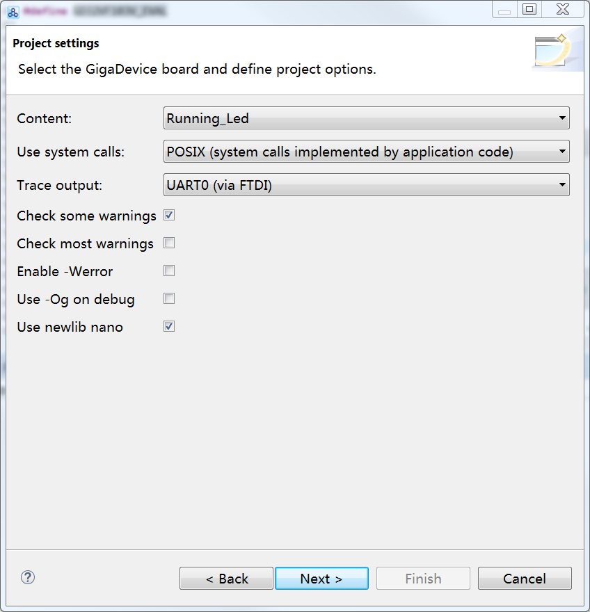
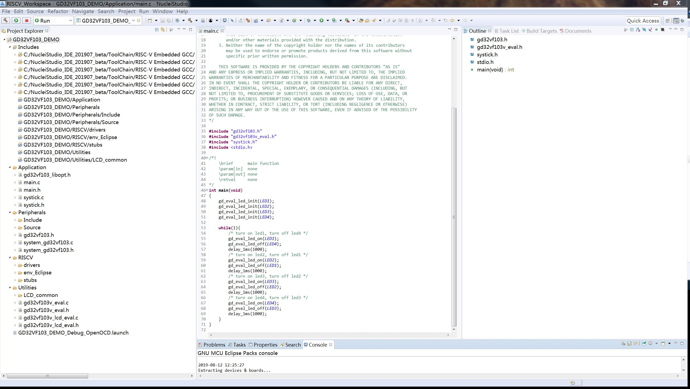
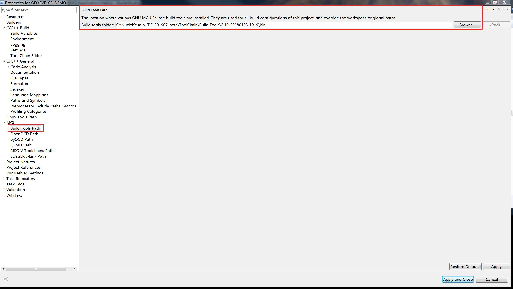
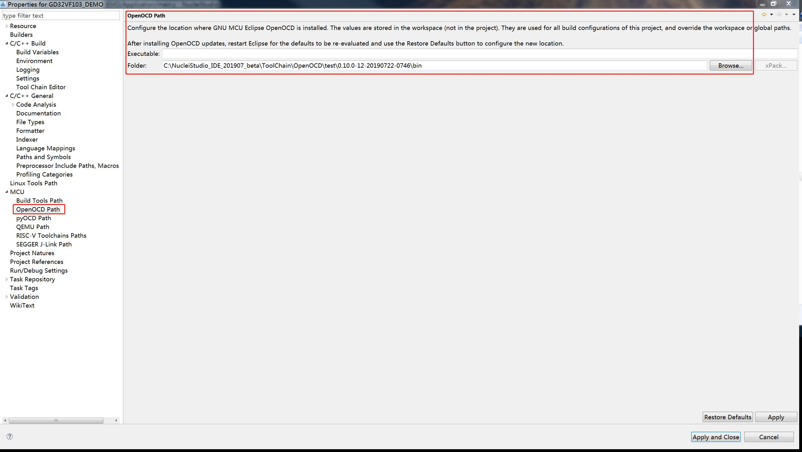
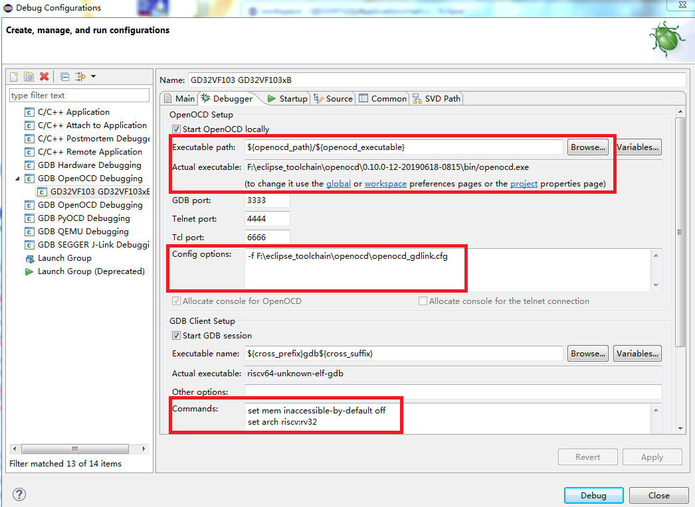

1. 开发环境准备
- Development boards: GD32V103V-EVAL-V1.0 board
- Hardware Debugger: J-Link or GD-Link
- Operating system: WIN7 64-bit OS
- IDE: Eclipse IDE for GNU ARM & RISC-V C/C++ Developers (4.7.2)
- RISC-V Toolchains: RISC-V GCC(8.2.0)
- Build Tools: GNU MCU Eclipse build tools
- GDB server: OpenOCD
备注：确保将完整的SDK文件包拷贝至本地的任意英文路径下，使用我们提供的最新版本的OpenOCD。
2.使用模板自动建立工程
2.1.启动Eclipse并建立Workspace
图2-1.Eclipse Launcher

如图2-1，确保Workspace的路径中没有中文，点击“Launch”。
2.2. 选择要建立的工程
在菜单栏中，点击File->New->C/C++ Project，弹出图2-2界面，选择All -> C Managed Build，点击“Next”。
图2-2. 建立工程示意图

在Project name处，填入工程名称，同时选择“GigaDevice RISC-V C Project”,点击“Next”。
图2-3. 选择自动创建工程模板

图2-4. 选择芯片及评估板型号

图2-5. 选择Demo程序

图2-6. 选择生成配置文件

图2-7.设置GNU MCU RISC-V GCC 路径

图2-8. 工程建立完毕

3.设置工具路径
在GD32VF103的工程文件建立之后，已经包含了绝大部分的工程配置，但是仍需手动设置以下两个工具的bin路径（绝对路径）：
3.1.设置Build Tools Path
右击工程名称，点击Properties进入工程属性，如图3-1所示。
图3-1. Build Tools路径配置

点击MCU列表中的Build Tools Path选项，为其选择SDK文件包中提供的对应工具。
3.2.设置OpenOCD Path
图3-2. Openocd路径配置

如图3-2，点击MCU列表中的OpenOCD Path选项，为其选择SDK文件包中提供的对应工具。
4.选择具体的芯片型号对应的LDS文件
在自动模板创建工程时，默认使用“GD32VF103xB.lds”。如果对应不同的芯片型号，请手动进行修改即可。
图4-1根据芯片型号修改LDS文件

5.OpenOCD + GDB调试
在菜单栏中，点击Run->Debug Configurations，进入Debug配置界面，可以看到该工程对应的Debug配置文件已经自动生成，如图5-1所示。
图5-1. Debug配置界面

我们使用OpenOCD作为GDB Server，使用GCC工具链中的GDB工具作为GDB Client。
同时，可以看到对应GD32VF103芯片的SVD文件已经被自动加载。
5.1.Debugger选项卡
图5-2..Debugger选项卡配置界面

如图5-2，在Debugger选项卡中，红圈中的配置已经自动生成。
其中，“Config options”是为OpenOCD选择配置文件，需要根据当前使用的下载器选择不同的cfg文件。
本例中的Config options为：
openocd_gdlink.cfg
注意：openocd文件夹内提供了openocd_gdlink.cfg / openocd_jlink.cfg两个个配置文件，对应于不同的调试器使用。使用JLINK时，需要更换驱动，可参考《GD32VF103_JLINK驱动安装_V1.0》文档。推荐使用GDLINK。
5.2. Startup选项卡
图5-3. Startup选项卡配置界面

如图5-3，在Startup选项卡中，红圈中的内容已经被自动配置完毕。
注意：Run/Restart Commands这一栏的配置将会影响对系统复位（引脚复位、软件复位或 按钮产生的引脚复位）的调试；另外，还需配合我们提供的最新版本的OpenOCD。
按钮产生的引脚复位）的调试；另外，还需配合我们提供的最新版本的OpenOCD。
最后，点击Apply，完成GDB调试的配置。点击Debug，即可开始调试该工程。
图5-4 Debug界面

其中包含了：
- Debug窗口
- 控制台窗口
- 外设寄存器窗口（观察窗口和寄存器窗口）
- 代码编辑窗口
- 汇编代码窗口
- 处理器寄存器窗口
- 断点信息窗口